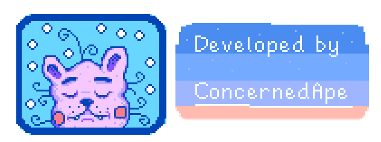

You've inherited your grandfather's old farm plot in Stardew Valley.
Armed with hand-me-down tools and a few coins, you set out to begin your life!

Create the farm of your dreams: Turn your overgrown fields into a lively and bountiful farm!
Learn to live off the land: Raise animals, go fishing, tend to crops, craft items, or do it all! The choice is yours...
Become part of the local community: Pelican Town is home to over 30 residents you can befriend!
Meet someone special: With 12 townsfolk to date, you may even find someone to start a family with!
Explore vast, mysterious caves: Encounter dangerous monsters & valuable treasures deep underground!
Customize: There are hundreds of character & home decoration options to choose from!
plaatjes van alle bedrijven waar je stardew valley kan kopen
lijstje met pegi dingens en waarschuwingen enzo
Stardew Valley Copyright (C) 2016-2023 ConcernedApe LLC
The term "Grange" is a registered trademark of the National Grange of the Order of Patrons of Husbandry.
Privacy Policy Terms of use